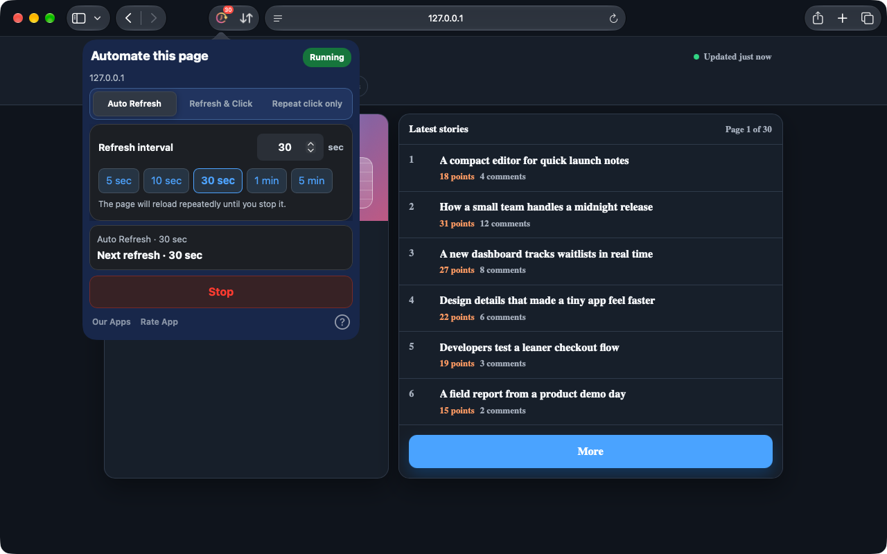
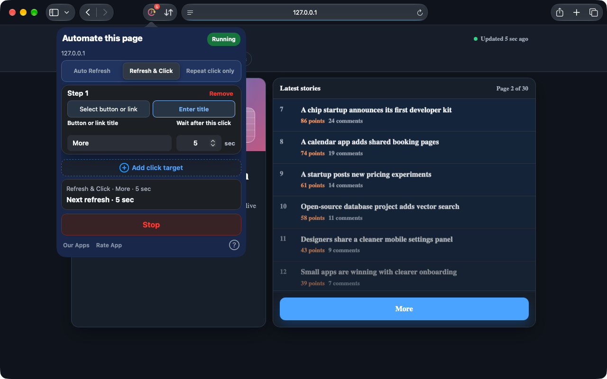
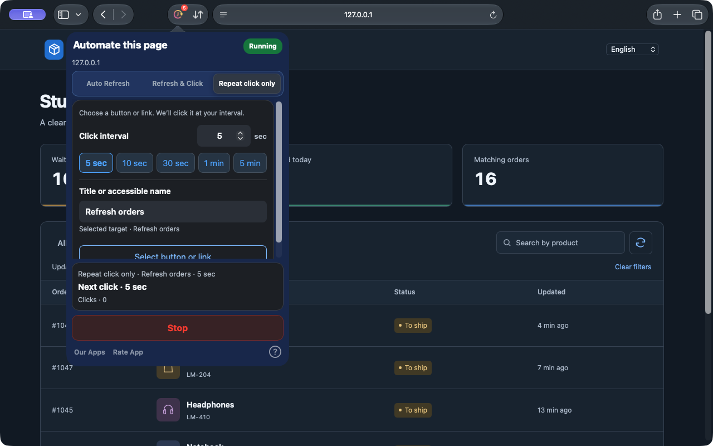

Auto Refresh
Pick a preset or enter a precise interval to keep dashboards, inventory, and status pages current.
Safari on iPhone, iPad, and Mac. Chrome on desktop.
Some pages need a refresh. Others just need a click. Auto Refresh & Clicker takes care of those repeated actions on Safari webpages, so you can get on with your day.
Inside your browser. No account needed.
Safari 1.10.0 preview. These new features are being prepared for release; check the version available in your store. The Chrome extension is updated separately.
See how it works


Safari on Mac 1.10.0 · Actual captures on a local demonstration page
From a changing dashboard to a button you click repeatedly: choose the task that fits your page.
Pick a preset or enter a precise interval to keep dashboards, inventory, and status pages current.
Choose a button or link on the page, or enter its title. After each refresh, follow your click steps with a wait after each one.
Repeat clicks without reloading the page. Pick even an icon button, set the interval and keep your list moving.
A short setup, then a clear view of what is running.
Install and open the app, then enable the extension in Safari Settings and allow access to your website.
Choose a mode and set the interval or the wait after each step. For clicks, pick a button or link on the page, or enter its title.
Start and check Running and the countdown. Stop at any time, or apply changes to update the task.
No web account to create. Configuration is stored locally, with tasks managed separately for each tab.
On iPhone and iPad, keep Safari in the foreground. The system may suspend tasks in the background or while locked.
PrivacyTasks run on webpages in Safari, or in the desktop Chrome extension. It does not control other apps or system interfaces.
Open the installed app at least once, then check Safari Settings → Extensions. Use Safari 15.4 or later. If it is still missing, contact support with your macOS, Safari, and app versions and installation source.
Continuous background operation is not guaranteed. iOS and iPadOS can suspend browser tasks. Keep Safari in the foreground for active tasks.
In the current Safari version, edit the configuration and choose Apply changes. The summary shows the active task. Choose Stop to end it.
Safari on iPhone, iPad, and Mac. Chrome on desktop.
See each store for current pricing and compatibility.